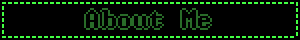
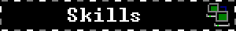
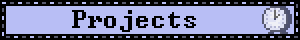

Adam Shaw
Programming Student
Staffordshire University



Hello, I am an undergraduate who is studying Computer Games Programming at Staffordshire University. While studying programming I have learned DirectX11, OpenGL, GitHub - for solo and team projects, as well as other frameworks like SDL2. Outside of programming I spend my time playing Chess (online, at tournaments, and as a part of my university's Chess club), Minesweeper speedrunning, Skydiving, Film Photography, and playing a varity of video games. The games I tend to lean towards are indie games and short experimental games that explore an idea not usually explored in the industry. I've grown up playing games; from the PS2 and the Xbox, to building my PC to continue playing the weirdest asortmant of games that I can come up with. Hopefully my webpage will illustrate my passion for playing and creating video games.

- Solid understanding of C++ and C#
- Broad maths knowledge
- Confident and adaptive problem solver
- Excellent with the Unity engine
- Experienced with working as part of a team

Space Shop 3D Environment


This project is a 3D environment I made in 3DS Max; with an animation to accompany it. The inspiration of this project was a mix between Zathura: A Space Adventure (2005) and Job Simulator (2016). I created all of the assets for this project apart from the animation and model of the person that appears in the animation. I now focus on programming, however I understand the work that goes into creating art within the industry.
Twine Interactive Story

This project is an interactive story inspired by the old adventure books "Choose your own adventure" which I loved reading growing up. This game was created in Twine and I encorporated HTML and CSS to
create a story about being tasked to travel to Severodvinsk to fight for Russia (this was created before the Russian Ukrainian war).
Click Enter below to play the game.
OpenGL Environment

I learned a lot from this project as it was my first with OpenGL.